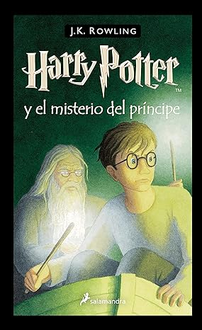

Bienvenidos al Mundo de Harry Potter
¡Bienvenido a nuestra página dedicada al maravilloso mundo de Harry Potter! Aquí encontrarás descripciones detalladas de los personajes más emblemáticos, desde el valiente Harry Potter hasta el astuto Draco Malfoy. Sumérgete en las historias de las cuatro casas de Hogwarts: Gryffindor, Hufflepuff, Ravenclaw y Slytherin, cada una con sus propios valores y tradiciones. Aprende sobre los hechizos más fascinantes, como el encantamiento protector "Expecto Patronum" y el hechizo desarmador "Expelliarmus". Nuestro sitio es un recurso completo para todos los fanáticos del universo mágico creado por J.K. Rowling, donde la magia cobra vida y la aventura nunca termina. ¡Explora y deja que tu imaginación vuele con nosotros!
Descubre el Mundo Mágico
Películas
| PELÍCULA | ESTRENO | DIRECTOR | CURSO | CLASIFICACIÓN | DURACIÓN |
|---|---|---|---|---|---|
Libros
-
Harry Potter y la Piedra Filosofal

Publicado en 1997
El viaje comienza con 'Harry Potter y la piedra filosofal', donde conocemos a Harry, un huérfano que vive con sus desagradables tíos y su primo Dudley. Todo cambia en su undécimo cumpleaños, cuando descubre que es un mago y asiste a la Escuela de Magia y Hechicería Hogwarts. Entre hacer amigos y descubrir su fama en el mundo mágico, Harry se enfrenta al misterio de la Piedra Filosofal.
-
Harry Potter y la Cámara Secreta

Publicado en 1998
El segundo año de Harry en Hogwarts está plagado de nuevos desafíos en 'Harry Potter y la cámara secreta'. La Cámara de los Secretos ha sido abierta, dejando a los estudiantes en peligro. Harry, Ron y Hermione deben usar su ingenio para desentrañar la historia de la cámara y detener la amenaza que acecha en las sombras.
-
Harry Potter y el prisionero de Azkaban
Publicado en 1999
'Harry Potter y el prisionero de Azkaban' eleva la tensión cuando un peligroso prisionero, Sirius Black, escapa de Azkaban y todos creen que va tras Harry. A lo largo de este libro, Harry explora más sobre su pasado y se enfrenta a criaturas aterradoras como los dementores, aprendiendo en el camino valiosas lecciones sobre la amistad y el coraje.
-
Harry Potter y el Cáliz de Fuego

Publicado en 2000
La competición llega a Hogwarts con el Torneo de los Tres Magos en 'Harry Potter y el cáliz de fuego'. Harry, inesperadamente seleccionado para competir, debe superar peligrosas pruebas. Este libro marca un punto de inflexión en la saga, con un tono más oscuro y la revelación de que Lord Voldemort está cerca de recuperar su poder.
-
Harry Potter y la Orden del Fénix
Publicado en 2003
Las cosas se ponen más serias en 'Harry Potter y la Orden del Fénix'. El Ministerio de Magia se niega a reconocer el regreso de Voldemort, y Harry debe luchar contra la desinformación y el miedo. Este tomo introduce a la Orden del Fénix, un grupo secreto que lucha contra las fuerzas oscuras, y muestra cómo Harry asume más responsabilidades y desafíos.
-
Harry Potter y el Misterio del Príncipe
Publicado en 2005
Secretos del pasado salen a la luz en 'Harry Potter y el misterio del príncipe'. Mientras Voldemort gana fuerza, Harry y Dumbledore buscan la manera de detenerlo. Descubrimientos sobre el pasado de Voldemort y los Horrocruxes son clave en este penúltimo libro, preparando el escenario para la batalla final.
-
Harry Potter y las Reliquias de la Muerte
Publicado en 2007
Todo culmina en 'Harry Potter y las reliquias de la Muerte'. Harry, Ron y Hermione deben encontrar y destruir los Horrocruxes restantes para derrotar a Voldemort. En su viaje, enfrentan desafíos físicos y emocionales que pondrán a prueba su amistad y coraje. Es una conclusión épica y emocionante para la saga.